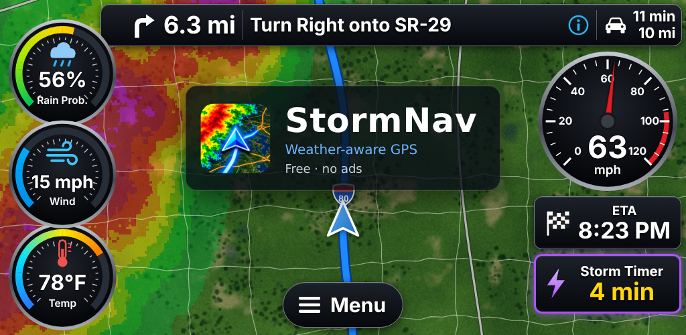
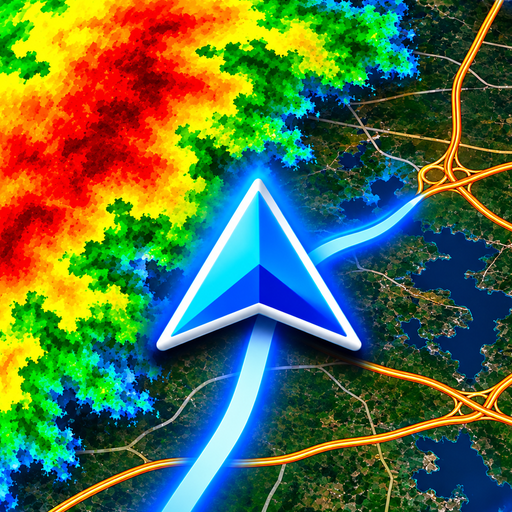

StormNav
Weather-aware GPS for Android · free, no ads
StormNav is a navigator that watches the weather for you. It shows live NOAA radar under the roads, tells you how many minutes until you reach the next storm, and helps you find a detour or a safe place to wait it out.
Android only. Open the downloaded file to install; if your phone asks, allow "Install unknown apps" for your browser.
Why I built StormNav
At 4:40 one morning I was driving to work through a heavy storm. Halfway there, a tornado touched down, and the radio said it would reach the area around my work in six minutes. I was five minutes away, driving straight toward it in the dark, with rain going sideways. I made it into the parking lot and was rushed into a tornado shelter.
Later that week, I dreamed my GPS had weather radar built in. I decided to make it real. That's StormNav.
— Michael Fougnie
See storms before you hit them
- Live radar, updated as soon as a new image is out (about every 2 minutes)
- Storm Timer: minutes until the next band of heavy rain on your route
- Measures how storms are moving and checks where they'll be when you get there
- National Weather Service alerts along your route and where you are
Detour or wait it out
- Severe storm ahead? Find a detour, wait it out, or keep going
- Gas stations, restaurants, hotels and rest areas before the storm, and a "you're clear" alert when it passes
- Best time to leave: compare leaving now with leaving later
A real navigator
- Turn-by-turn voice guidance with your choice of voices
- Smart search: "Springfield Walmart", street addresses, "gas", "coffee"
- Home, Work, recent places and remember-my-parking-spot
- Fog, ice, snow, high wind and flooding warnings where you are
- Storm Chaser mode for experienced chasers
StormNav is a heads-up tool. Always follow official warnings and drive safely.